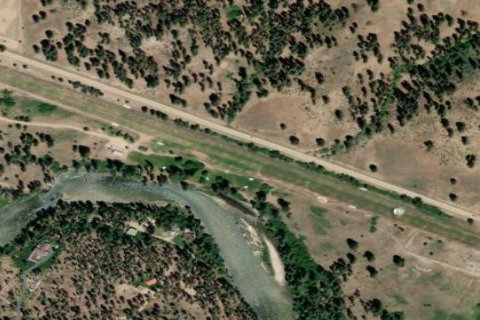

GARDEN VALLEY
U88 · ID

Aerial imagery source: Esri, Vantor, Earthstar Geographics, and the GIS User Community
| Identifier | U88 |
|---|---|
| State | ID |
| Runway length | 3,850 ft |
| Runway width | 125 ft |
| Surface | TURF |
| Runway | 10/28 |
| Elevation | 3,177 ft |
| Ownership | public |
| CTAF | 122.9 |
| Coordinates | 44.06694444, -115.93127777 |
Notes
[idaho_itd] State Airfield [shortfield] Location Overview Garden Valley is a popular mountain turf airstrip on the eastern end of Garden Valley, located adjacent to the South Fork of the Payette River, approximately 30 miles north of Boise. The airfield sits at 3,177 feet elevation, nestled between two mountains, and the runway is not easily visible from the air unless you are directly over it. The airport is state-managed and located two miles southeast of the town of Garden Valley. Camping & Recreation Camping facilities include shelters, tables, fire places, toilets, and showers. The river along the runway is fishable and moderately productive, and the Garden Valley Rifle Range is located nearby. The airport frequently hosts fly-ins and shows, attracting visitors from around the state, and courtesy cars are available on-site, with several restaurants in the nearby town. The annual Jerry Terlisner Memorial Father's Day Fly-In is a beloved tradition, featuring a Saturday evening campout and potluck dinner followed by a Sunday pancake breakfast. There is a hot springs located about 1.5 miles to the east - the free USFS Hot Springs Campground. Notes & Warnings The runway is oriented 10/28, measuring 3,850 feet by 125 feet. The recommended procedure is to land on runway 10 (uphill, into the terrain) and depart on runway 28 (downhill), if winds allow. Pilots should watch for irrigation sprinklers and pipes on the runway, and tie-downs are located at midfield on the river side. The proper arrival procedure is to overfly mid-field and then turn left downwind for runway 10. The strip is widely considered a good introductory backcountry airstrip, making it an ideal place for pilots new to backcountry flying to get their feet wet before tackling more challenging destinations like Johnson Creek. The Idaho Division of Aeronautics has published standard operating procedures (SOPs) and produced instructional videos for this airstrip. History Garden Valley is one of four Idaho state-owned airstrips popular enough that the Division of Aeronautics hires seasonal caretakers to greet visiting pilots — a distinction it shares with Smiley Creek, Johnson Creek, and Cavanaugh Bay. The Idaho Aviation Foundation (IAF) has played a significant role in improving the strip over the years. Working with the state Division of Aeronautics, the Idaho Aviation Association, and many volunteers, the IAF funded and constructed shower and restroom facilities that were completed in July 2011, paid for entirely through donor contributions. Beyond recreational use, the airport has also served the broader community as an aerial base for U.S. Forest Service wildland firefighting operations and as an air ambulance staging point for emergency medical evacuations. Today it remains one of the most accessible and well-loved turf strips in the Idaho state aviation system.